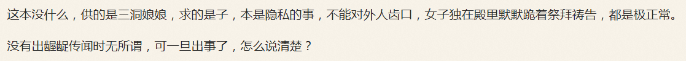

“怎么又来个三观炸裂？”柴禾妞看着宣传阵地当中出现了自己熟悉的话题，“与整个版面的氛围格格不入吖”。
“你往前翻”，郭春海提醒，“肯定是有谁刚离婚，贴个图宣泄一把”。
“找到了”，柴禾妞看着化名‘可口可乐’的帐号贴了离婚证封面，“后面评论都很正常”。
“再回头看前面那个骨科亲家的段子，是不是就不正常了？”郭春海解释，“色目情报掮客就是要‘痛打落水狗’，追着扣黑锅泼脏水，既有高学历精英社交圈现成的段子，也可以出动快速反应部队现编段子抹黑，啥‘五十块包月破鞋’都只能算基本功”。
“特意发在煎蛋，就应该是九省通衢的事”，柴禾妞琢磨，“会不会与楼下目标有关？”
“不知道，我问问你哥”，郭春海拿起手机，“遭瘟快结束了，彩排也该继续了”。
“说什么了？”柴禾妞看郭春海的表情猜不到任何通话内容。
“共案和个案的区别，你还是仔细揣摩‘黄蓉’的所作所为吧。煽风点火挑拨离间是组织的既定方针，拆散一对是一对”，郭春海挂掉电话，开始说明，“拆完了兵分两路追着喷，一定要添油加醋，搞到两家人不共戴天成世仇，然后分别安排间谍特务卧底各自勾引，于是黑底白条纹和白底黑条纹两窝野种就这么扎根了。隐藏几代之后再鸠占鹊巢，以华夏贵胄自居，假惺惺对立以迷惑人民群众的同时还要扮红白脸唱双簧，对所有土著进行多方围堵两面夹攻，追着喷滚到哪儿哪儿去，中国不是你的家”。
“看了刚才那条情报，倒没有三观炸裂，习惯了”，柴禾妞莫名惊诧，“但是听你解说组织的方针政策路线计划，确实刷新了三观”。
“要不然你以为咪蒙为啥刚被全网封锁，立刻就在高学历精英社交圈原地满血复活呢？”郭春海说，“就从这种下三路段子也能看出咪蒙的风格吧？你应该非常熟悉才对”。
“是很熟悉，你说过沙特是女权主义组织最大赞助商，政治合作路线与意识形态纲领完全相反”，柴禾妞回忆苏修美帝刮民党锤镰帮的排列组合，“难道叫嚣着三纲五常炫耀大男子主义的鲁国蠕棍，是以色列扶持的么？”
“未必定居以色列，为了控制96%的媒体，希伯来太君需要遍布全球监工呢”，郭春海严密的考虑问题，“总而言之色目中央高瞻远瞩算无遗策目光如炬用兵如神运筹帷幄决胜千里，你按照这种‘料敌从宽’的原则不惮以最大的恶意揣测，才能做到预则立不预则废”。
“楼下目标是怎么回事？”柴禾妞想起任务了，“我哥没说？”
“说了，有点麻烦”，郭春海解释，“剧组指使老流氓拿着目标证件，走通人脉办了结婚证离婚证，但不知道怎么跟目标摊牌”。
“上次闹过之后再没看见人来，一共就打过那一炮”，柴禾妞评价，“看来真的是龙套角色”。
“你哥说麻烦不在这里，在户部服务器大数据当中，目标状态本来是未婚，后来变成已婚”，郭春海解释，“现在不能回滚，只能改成离异，或者丧偶”。
“丧偶？！”柴禾妞警惕起来了，“瞒着目标代办手续，确实能办成离异就能办成丧偶，目标还被蒙在鼓里，于是冤假错案就这么搞定了，接下来就是被从足协主席到军委主席的高第良将家衙内逼上凉山吧？”
“平时办案叫嚣活要见人死要见尸”，郭春海补充，“但是特殊时期，传染病尸体都是直接火化，连渣都不剩”。
“幸亏这次党国中央似乎没瞒报疫情，死亡人数不算多”，柴禾妞想起清真产业链了，“否则我肯定会怀疑‘量中华之人力，结沙特之欢心’的基本国策，出口的马虏大‘纵做鬼，也不幸福’”。
“水过地皮湿”，郭春海叹了口气，“从足协主席到军委主席的高第良将家衙内惦记着搭顺风车逮个肉便器，只不过是一条短信的工夫”。
“又要抢戏？暴毙了原地满血复活纳入后宫”，柴禾妞又警惕起来了，“这是准备‘接老子盘’呢，还是‘扒儿子灰’呢？真搞不懂它们爷儿俩”。
“石室石狮石氏，嗜诗，誓食屎”，郭春海背诵《石氏食屎史》，问柴禾妞，“你知道为啥珠宝品牌大多姓‘周’么？”
“这有什么关系？”柴禾妞莫名其妙，“你又准备扯到哪里去？”
“当年西学东渐的时候，全盘西化方针政策路线计划当中，就有汉字拉丁化一项”，郭春海解释，“当时赵元任就创作了著名的《石氏食屎史》，字母佬哑口无言，一锤定音”。
“后来似乎换了一种手段，就是不停的简化汉字”，柴禾妞听说过“二简字”相关内容，“简化成抽象符号与传统完全割裂的程度，格式化重装洗脑大业就算成功了一半”。
“所以阻力甚大，二简字被废除了”，郭春海解释，“但是在几乎全民扫盲并且普及义务制教育的大背景下，仍然坚持汉字拉丁化不动摇还到处鼓吹‘英语是世界语言，境内应该双语化’的，只剩下周有光一个知名人物了”。
“确实形迹可疑”，柴禾妞点头，“但是还没有与珠宝扯上关系”。
“最近一堆遭瘟的邮轮”，郭春海提起时事新闻，“钻石公主、黄金公主、红宝石公主、珊瑚公主……你认为这是巧合么？”
“我不觉得这是堆砌偶然性形成的巧合”，柴禾妞知道郭春海从来不相信什么巧合，尤其是色目情报掮客手抚后脑勺“蛙蛤蛤蛤你想多了你想多了”越描越黑的时候，“但是我也看不出必然性在哪里”。
“两头蛇、双尾蝎”，郭春海说，“如果你发现有个唤作‘谢珍宝’的帐号，注册了这俩商标，第一反应是什么？”
“碰瓷《水浒传》”，柴禾妞直接把第一反应说出来，“应该是与捕猎野生动物有关”。
“这你就错了”，郭春海直接说出事实，“这俩品牌名下，都是女性向情趣道具”。
“很精彩”，柴禾妞饶有趣味的看着郭春海一本正经的胡说八道，对其圆谎功夫表示赞叹的同时还有些许质疑，“只不过逻辑链还没有闭合呢，还差最后一个环节：谢珍宝为啥不姓周”。
“强调本地特色，对不远万里偷渡入境的哪儿来的野种高度警惕”，郭春海面不改色心不跳，久违的说了一句九省通衢方言，“不服周”。
“刚好九省通衢现任市长周先旺”，柴禾妞评价，“中央知道你们不服，特意派来一个”。
“我就是喜欢你们看不惯我但是不得不和我一起高举紧跟的样子”，郭春海评价，“市面上色目情报掮客到处转发周市长尊容并配上这种台词，得意洋洋肆无忌惮的炫耀武德充沛一力降十会，你说本地市民是不是憋了一肚子气？”
“是，是”，柴禾妞虽然没有亲眼见到宣传画，但是听郭春海描述再结合之前情报搜集实践，很容易就能理解，“色目情报掮客煽风点火挑拨离间的本事，真是炉火纯青吖”。
“换掉马国强只需要锤镰帮内部决定”，郭春海说，“换掉周先旺就需要土著代表大会在武德充沛的锤镰帮中央威逼利诱之下盖橡皮图章了”。
“看来这肚子气还得憋着”，柴禾妞评价，“年前到现在，已经憋了三个月了”。
“当然，代表土著反抗异族侵略者的民族英雄也不是没有”，郭春海话锋一转，“红皮绿人马书记大力贯彻落实留白增绿路线图的时候，民族英雄登高一呼‘我华夏也，马瓦力滚回沙特当马虏大去，九省通衢不是你的家’”。
“要是换成周市长大力贯彻落实‘九五二七’钦定大目标呢”，柴禾妞补充情节，“民族英雄就该登高一呼‘我蛮夷也，昆仑奴滚回巴布亚新几内亚闹猪瘟去，九省通衢不是你的家’了吧？”
“与此同时还在强调‘惟楚有才’，叫嚣自力更生艰苦奋斗自己动手丰衣足食，一不怕苦二不怕死排除万难不怕牺牲”，郭春海添油加醋，“得意洋洋肆无忌惮的炫耀咱自由、独立，境内严格中立的大梁国，既无内债也无外债”。
“今日欢呼灵长目，只因马瘟又重来”，柴禾妞知道耍钱的朋友最是消息灵通，“中央已经提前打好招呼了，说只有猢狲才能避马瘟，九省通衢如果胆敢大楚族主义作祟，不让哪儿来的野种钦定主角龙傲天上台，还得遭人瘟”。
“接下来色目情报掮客就该嘲笑九省通衢土著没有自知之明，给脸不要脸，遭瘟了才知道跪在真实，从此增强‘四个意识’坚定‘四个自信’做到‘两个维护’，把一切行动统一到‘九五二七’钦定大目标之上来”，郭春海按照组织提供的标准大纲剧透，“当然不会赶在杀伐果断通权达变狠角色‘一将功成万骨枯’之后假惺惺哀悼受难者的当天，肯定是找个替死鬼吸引民间火力”。
“我好像看见了，还就是昆仑奴美术兲才，炫耀特权之后假惺惺的的道歉，画了个‘辫子跪舔’的形象作为签名”，柴禾妞分析情报，“接下来只要等着周市长出头露面发表重要讲话，衬托钦定主角龙傲天正式浮出水面，就可以了也”。
“你哥说剧情走向差不多就是这样”，郭春海继续剧透，“所以楼下目标的女朋友，被剧组拿走送给昆仑奴留学生作为赔礼道歉了”。
“目标的角色就是憋了一肚子气的费拉不堪的荆楚土著，但是还不得不与武德充沛昆仑奴同殿为臣一起山呼万岁扶保钦定主角龙傲天”，柴禾妞进行文艺评论，“当然如果除了夺妻之恨以外，再来个杀父之仇就更有戏剧性了，老流氓那种人渣，挂了也就挂了”。
“昆仑奴工具人之前在三洞大学留学，校方分配了仨学伴侍寝”，郭春海补充背景，“三个屁股六个洞，玩得乐不思楚”。
“现在被分配到九省通衢负责卡位占座工作”，柴禾妞问，“肯定惦记着虽然岗位调整但是待遇不能降低是吧？”
“谈判的时候，不算人数算洞数”，郭春海解释，“地主家也没有余粮吖，组织精打细算，分配了仨基佬，昆仑奴不答应，只好给两双破鞋了”。
“为啥要分配基佬？”柴禾妞刚问出口就想通了，于是自问自答，“身患艾滋病的黑皮绿人同性恋残疾难民素食主义者女权拥趸，确实是政治正确最恰当的代言人嘛”。
“没那么过分，招牌活广告有其它人负责，这昆仑奴是卡位占座的”，郭春海举例，“你看各种残障大会上，上台发言拥戴伟大光荣正确的代表，有耳聋眼瞎的，有缺胳膊少腿的，但是没有五官扭曲流着口水辞不达意的蒙古人”。
“蒙古人？”柴禾妞没听懂，但是从对于形象的描述大致能猜出脑残成啥样，“那不是先天愚型么？”
“法语之言，能无从乎？”郭春海叹了口气，“到现在法语当中都称其为蒙古人，法兰西妈控大统领一声令下，境内关系户影武者纷纷出动，到处放风带节奏，声势浩大不输给色目中央指挥的情报掮客呢”。
“明白了，还是继续说昆仑奴吧”，柴禾妞搜集情报，“这个‘六洞大师’左拥右抱的自拍照，还有大理山歌《两个婆娘一个郎》的视频动图，就是昆仑奴上岗宣言？”
“是啊，上身穿着本地知名商标煎蛋の文化衫以示入夷则夷，刚好盖过屁股，下半身穿没穿不知道”，郭春海评价，“哪怕就看腿上皮肤颜色，也看不出是黑皮吧？”
“开了美颜滤镜？还是后期磨皮套色？”柴禾妞问，然后自问自答，“不对，你说过配种多代之后就看不出来了”。
“宁可十年不将军，不可一日不拱卒”，郭春海念了两句诗，“先在边疆站稳脚跟，长得有碍观瞻就自称少数民族，然后一步一个脚印一代一个野种的往中央渗透，奋六世之余烈，终于拿到了兲朝版图正中间的九省通衢の户口本了也”。
“总算修成正果了”，柴禾妞评价，然后觉得不对劲，“不是说代表中央进行殖民统治么？怎么入籍了？”
“两手抓两手都要硬，黑底白条纹和白底黑条纹不可偏废”，郭春海解释，“不管黑马白马，能祸害土著费拉就是好马，人民群众不想被祸害，就要切记中央‘只有猢狲才能避马瘟’的系列重要讲话精神”。
“也就是说，这昆仑奴反而成了民族英雄”，柴禾妞讽刺，“鸠占鹊巢之后，反而可以‘代表’了中华民族，一路青云直上主席台，进行各种伟大复兴相关活动”。
“就是这样，钦定主角龙傲天也是工具人”，郭春海评价，“只要一切行动听指挥，就可以开挂升级装哔打脸平砍连击带顺劈一命通关天下布种，你早就知道了”。
“难怪那许多童年才俊争先恐后削尖脑袋往上钻，不择手段不惜一切代价哪怕人后遭罪也要人前显贵，膝盖生根头顶绿得发黑贱到骨子里去了，还美其名曰人缘好情商高识大体顾大局懂政治讲规矩守纪律”，柴禾妞嘲笑，“虽然同进士不是进士，但是儿皇帝也是皇帝嘛”。
“直接空降野种接班，抵触情绪太大”，郭春海解释，“倒不如加入共产主义儿童团，从基层开始挂职锻炼，吃香的喝辣的享受青春与混年头熬资历两不耽误，人有多大胆，简历就有多晃眼”。
“你说过了贵种都这么干，工具人干惊天动地事，自己做隐姓埋名人，等到桃子成熟的那一霎那，再玩乾坤大挪移形象互换”，柴禾妞感慨，“没想到就连哪儿来的野种都能躺赢了”。
“你看吟游诗人最近爆料”，郭春海搜集情报，“三洞大学附近的龙裔，全面排查细作的同时，正在整顿市容，围剿‘播种机宣传队’呢①”。
“否则一不留神就输掉了裤裆斗争，一着不慎满盘皆输”，柴禾妞接口，“生产力决定生产关系，经济基础决定上层建筑，社会存在决定社会意识，下半身决定上半身，家务事决定公务事”。
“就着这个话题，放松一下”，郭春海决定先娱乐再致死，“咱们来对对子吧，老树开新花那种”。
“请”，柴禾妞并不放松，知道郭春海惜墨如金不做无用功。
“夫人”，郭春海出上联。
“进士”，柴禾妞回答，但是看郭春海摇头，仔细想了一下，改口，“皇帝”。
“如夫人”，郭春海赞许的点头，继续出上联。
“儿皇帝”，柴禾妞对答如流，一点不费劲。
“注意听好”，郭春海提醒接下来是甩包袱，“送如夫人借种”。
“原来如此”，柴禾妞恍然大悟，“让儿皇帝接盘”。
“耕田之利十倍、珠玉之赢百倍、立国家之主赢无数、立教廷之主赢得不可名状”，郭春海引经据典，“这也是传统兵法的典型运用，为了说服女权主义破鞋一切行动听指挥完成鸠占鹊巢宏图伟业，通常都给点甜头，在那科技有待昌明高新产品仍欠发达的年代，一般附赠嫪毐一只以解决其唯物主义需求呢”。
“听起来怎么这么像复旦残联下属滴血认亲实验室的一贯作风呢？”柴禾妞评价，“成分鉴定报告也是它们出品，宣讲血浓于水精神也是它们派人”。
“面子还是里子，只能选一边”，郭春海评价，“或者带着大屌冒充阉人混进后宫，既有机会也有能力”。
“或者翻拍《说岳全传》，当代王佐深入敌营策反间谍特务卧底之前，必须欲练神功挥刀自断一肢”，柴禾妞接口，“反正外表看不出来”。
“上了贼船就下不来，革命螺丝钉唯一的自由意志，就是在两个必败选项当中挑一个”，郭春海说，“当中央已经钦定了不让你赢的时候，怎么选就怎么输，犹豫就会败北，果断就会白给”。
“有的人呢，就是没有自知之明，总惦记着名利双收”，柴禾妞说，“这种时候，复旦残联下属滴血认亲实验室就该出动狼牙棒指导昆仑奴深入学习政治规矩和组织纪律了吧？”
“是啊”，郭春海指着屏幕上照片当中昆仑奴那被煎蛋文化衫下摆挡住的裤裆，“程沝的屌，朱圭的脚，顾林的手，陆炎的口，四大舔狗破神枪”。
- ①